SECCIÓN 9R
EXTREMO DELANTERO DE LA CARROCERÍA
ESPECIFICACIONES
Especificaciones de apriete
Aplicación | N•m | Lb-Ft | Lb-pulgada |
Tornillos de la rejilla de ventilación del capó | 2 | - | 18 |
Tornillos del guardabarros (parte posterior de la facia) | 4 | - | 35 |
Perno del guardabarros al pilar A | 8 | - | 71 |
Tornillo facia del parachoques delantero a guardabarros | 1.5 | - | 13 |
Pernos de la bisagra | 20 | 15 | - |
Tornillos de la cerradura del capó | 8 | - | 71 |
Tornillos de la manilla de la cerradura del capó | 1.5 | - | 13 |
Pernos Capó a bisagra | 20 | 15 | - |
Pernos inferiores del guardabarros | 10 | - | 89 |
Tornillos del guardasalpicaduras | 1.5 | - | 13 |
Pernos del guardabarros superior | 10 | - | 89 |
MANTENIMIENTO Y REPARACIÓN
Servicio en el vehículo
Lubricación
Las bisagras del capó y los mecanismos de bloqueo requieren una lubricación periódica para obtener un funcionamiento apropiado. Consulte la
Sección 0B, Información general para conocer los tipos específicos y los intervalos de lubricación.
Ajustadores
Aviso: Los metales diferentes que están en contacto entre sí, son rápidamente afectados por la corrosión. Asegúrese de utilizar los sujetadores adecuados para evitar corrosión prematura.
En los modelos actuales se utilizan muchos componentes de aluminio. El aluminio, en contacto con el acero puede corroerse con rapidez si no se protege mediante acabados o aislantes especiales.
Los ajustadores usados disponen de un acabado especial que proporciona una adecuada protección contra la corrosión. Estos ajustadores especiales son de color distinto a los ajustadores métricos estándar de color azul medio, de forma que puedan identificarse con rapidez.
Cuando se sustituyan los ajustadores, evite la sustitución por ajustadores similares para la misma ubicación.
Materiales anticorrosivos
Para proporcionar resistencia a la oxidación, se han aplicado materiales anticorrosivos a las superficies interiores de la mayoría de los paneles metálicos. Cuando realice un servicio de estos paneles, vuelva a recubrirlos correctamente con un material anticorrosivo del tipo de servicio si es que se ha afectado de alguna manera el material original.
Sellado de extremo delantero
Todos los lugares en los que puedan presentarse fugas quedan sellados durante la producción del vehículo usando selladores duraderos de alta calidad. Si se torna necesario volver a sellar determinadas zonas, utilice un sellante de alta calidad con consistencia mediana que conserve su flexibilidad una vez seco y que pueda pintarse de ser necesario.
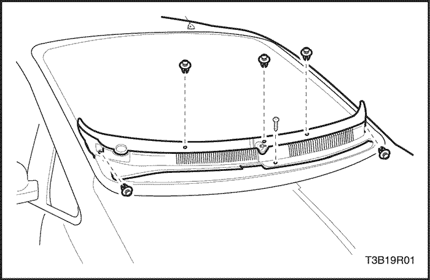


Rejilla de ventilación del capó
Procedimiento de desmontaje
- Levante el capó y sujételo con la varilla de soporte.
- Quite las tuercas y los brazos del limpiaparabrisas.
- Quite los tornillos de la rejilla de ventilación del capó y la rejilla de dos piezas.
Procedimiento de Instalación
Aviso: Los metales diferentes que están en contacto entre sí, son rápidamente afectados por la corrosión. Asegúrese de utilizar los sujetadores adecuados para evitar corrosión prematura.
- Instale la rejilla de dos piezas y los tornillos de la rejilla de ventilación del capó.
Apretar
Apriete los tornillos de la rejilla de ventilación del capó a 2 N•m (18 lb-in).
- Instale las tuercas y los brazos del limpiaparabrisas.
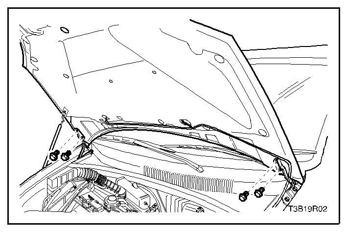
Capó
Procedimiento de desmontaje
Importante: Instale las cubiertas protectoras sobre los guardabarros y el parabrisas para evitar daños a la pintura, el cristal y los moldeos cuando se quite e instale el capó.
- Levante y sujete el capó.
- Retire la manguera de lavaparabrisas.
- Marque la posición de la bisagra en el capó para ayudar con la alineación durante la instalación.
- Retire los pernos que fijan el capó a ambas bisagras.
- Con la ayuda de otro técnico, quite el capó de las bisagras.
Procedimiento de Instalación
- Con la ayuda de otro técnico, coloque el capó en el lugar marcado durante el desmontaje.
Aviso: Los metales diferentes que están en contacto entre sí, son rápidamente afectados por la corrosión. Asegúrese de utilizar los sujetadores adecuados para evitar corrosión prematura.
- Instale los dos pernos que aseguran el capó a cada una de las bisagras.
Apretar
Apriete los pernos del capó a la bisagra a 20 N•m (15 lb-ft).
- Instale la manguera de lavaparabrisas.
- Inspeccione el capó para comprobar su alineación adecuada.
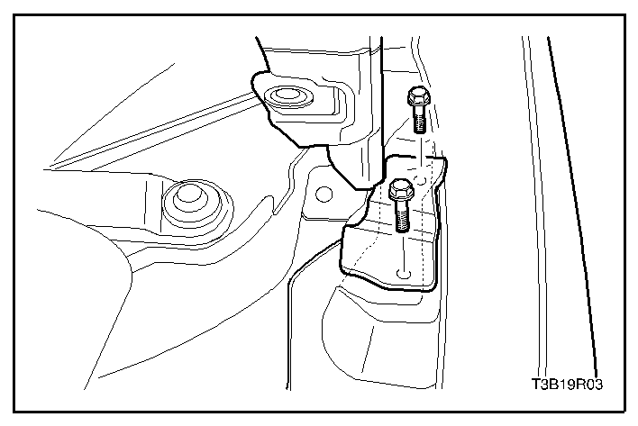
Bisagras del capó
Procedimiento de desmontaje
- Quite el capó. Consulte "Capó" en esta sección.
- Quite los pernos y la bisagra.
Procedimiento de Instalación
Aviso: Los metales diferentes que están en contacto entre sí, son rápidamente afectados por la corrosión. Asegúrese de utilizar los sujetadores adecuados para evitar corrosión prematura.
- Instale la bisagra con los pernos.
Apretar
Apriete los pernos de la bisagra a 20 N•m (15 lb-ft).
- Instale el capó. Consulte "Capó" en esta sección.

Varilla de soporte del capó
Procedimiento de desmontaje
- Sujete el capó en su posición de abierto.
- Quite la varilla de soporte del capó, tirando suavemente de la base situada en el soporte del radiador.
Procedimiento de Instalación
- Instale la varilla de soporte del capó volviendo a acoplar la base en el soporte del radiador.
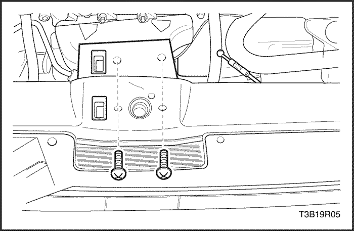
Cerradura auxiliar del capó
Procedimiento de desmontaje
- Abra el capó.
- Retire los tornillos y la cerradura del capó.
- Desconecte el cable de apertura del capó.
Procedimiento de Instalación
- Conecte el cable de apertura del capó a la cerradura.
Aviso: Los metales diferentes que están en contacto entre sí, son rápidamente afectados por la corrosión. Asegúrese de utilizar los sujetadores adecuados para evitar corrosión prematura.
- Instale la cerradura del capó con los tornillos.
Apretar
Apriete los tornillos de la cerradura del capó a 8 N•m (71 Lb-pulgada).

Cable de apertura de la cerradura del capó
Procedimiento de desmontaje
- Extraiga la manilla de liberación del capó para acceder a los tornillos.
- Quite los tornillos y la manilla de liberación del capó del tablero de instrumentos.
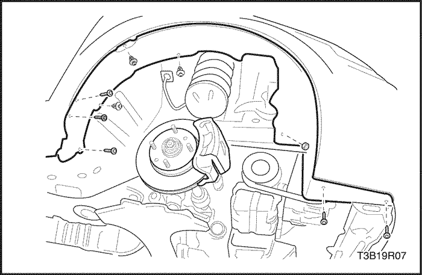
- Eleve y apoye debidamente el vehículo.
- Quite la rueda delantera. Consultar la sección 2E, neumáticos y ruedas.
- Quite los tornillos y los guardasalpicaduras.
- Abra el capó.
- Retire los tornillos y la cerradura secundaria del capó.
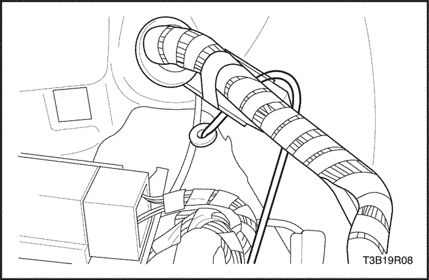
- Retire el cable de la manilla de apertura del capó.
- Retire el cable del interior del vehículo.
Procedimiento de Instalación
- Instale el cable desde el interior del vehículo.
- Instale el cable en la manilla de apertura del capó.
Aviso: Los metales diferentes que están en contacto entre sí, son rápidamente afectados por la corrosión. Asegúrese de utilizar los sujetadores adecuados para evitar corrosión prematura.
- Instale los tornillos y la cerradura auxiliar del capó.
Apretar
Apriete los tornillos de la cerradura del capó a 8 N•m (71 Lb-pulgada).
- Instale los guardasalpicaduras con los tornillos.
Apretar
Apriete los tornillos del guardasalpicaduras a 1.5 N•m(13 lb-in).
- Instale la rueda delantera. Consultar la sección 2E, neumáticos y ruedas.
- Baje el vehículo.
- Instale la manilla de liberación del capó en el tablero de instrumentos con los tornillos.
Apretar
Apriete los tornillos de la manilla de liberación del capó a 1.5 N•m (13 lb-in).
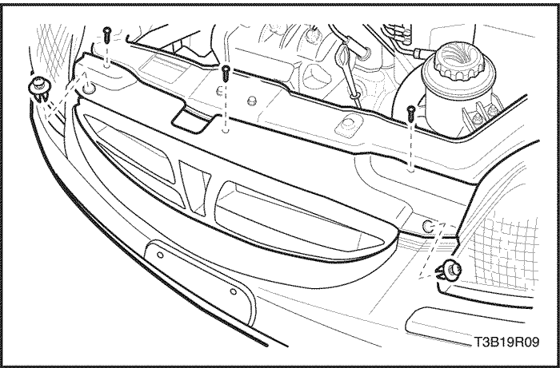
Rejilla del radiador
Procedimiento de desmontaje
- Abra el capó.
- Retire los tornillos y la rejilla del radiador.
Procedimiento de Instalación
Aviso: Los metales diferentes que están en contacto entre sí, son rápidamente afectados por la corrosión. Asegúrese de utilizar los sujetadores adecuados para evitar corrosión prematura.
- Instale la rejilla del radiador con el tornillo.
Guardabarros
Procedimiento de desmontaje
- Eleve y apoye debidamente el vehículo.
- Quite la rueda delantera. Consultar la sección 2E, neumáticos y ruedas.
- Retire los pernos y el guardasalpicaduras.
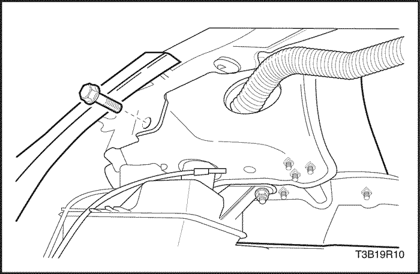
- Quite los tornillos de debajo de la facia del parachoques delantero.
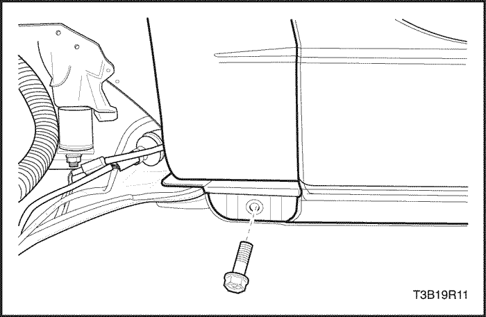
- Retire el tornillo que fijan la facia del parachoques delantero al guardabarros.
- Quite los pernos situados en la base del guardabarros.
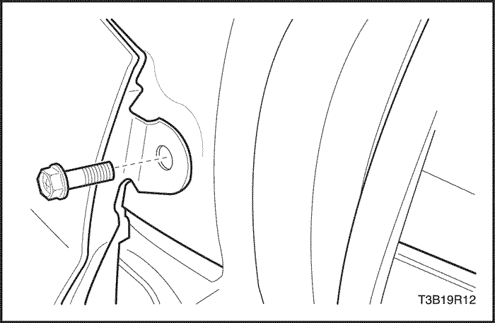
- Abra la puerta delantera. Retire el perno de la base del pilar A.
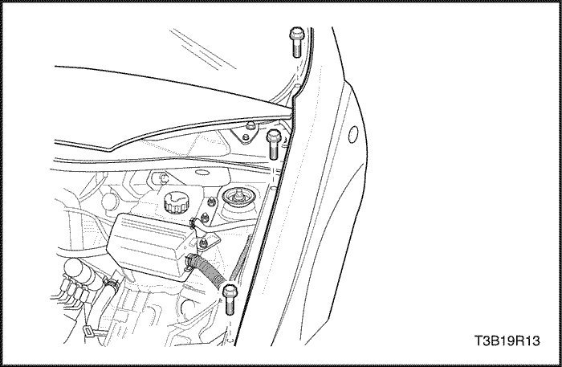
- Abra el capó.
- Retire el faro delantero. Consulte Sección 9B, Sistema de alumbrado.
- Desmonte los pernos de la parte superior del guardabarros.
- Retire el guardabarros.
Procedimiento de Instalación
- Instale el faro delantero. Consulte Sección 9B, Sistema de alumbrado.
- Instale el guardabarros.
Aviso: Los metales diferentes que están en contacto entre sí, son rápidamente afectados por la corrosión. Asegúrese de utilizar los sujetadores adecuados para evitar corrosión prematura.
- Instale los pernos a lo largo de la parte superior del guardabarros.
Apretar
Apriete los pernos superiores del guardabarros a 8 N•m (71 lb-in).
- Instale el perno en la base del pilar A.
Apretar
Apriete el perno del guardabarros al pilar A a 8 N•m (71 lb-in).
- Instale los pernos en la base del guardabarros.
Apretar
Apriete los pernos inferiores del guardabarros a 8 N•m (71 lb-in).
- Asegure el guardabarros a la facia del parachoques delantero con el tornillo.
Apretar
Apriete el tornillo de la facia del parachoques delantero a 1.5 N•m (13 lb-in).
- Asegure el guardabarros detrás de la facia del parachoques delantero con los tornillos.
Apretar
Apriete los tornillos del guardabarros a 4 N•m (35 lb-in).
- Instale los guardasalpicaduras con los tornillos.
Apretar
Apriete los tornillos del guardasalpicaduras a 1.5 N•m(13 lb-in).
- Instale la rueda delantera. Consultar la sección 2E, neumáticos y ruedas.
- Baje el vehículo.
DESCRIPCIÓN GENERAL Y FUNCIONAMIENTO DEL SISTEMA
Extremo delantero de la carrocería
Este vehículos presenta una carrocería unificada con un conjunto de bastidor que soporta el motor y el transeje. Los paneles del guardabarros y el soporte del radiador son también partes integrales de la carrocería.